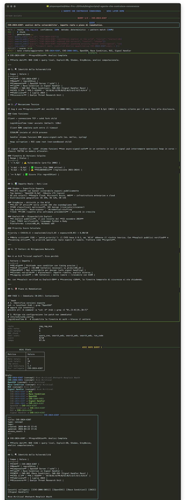
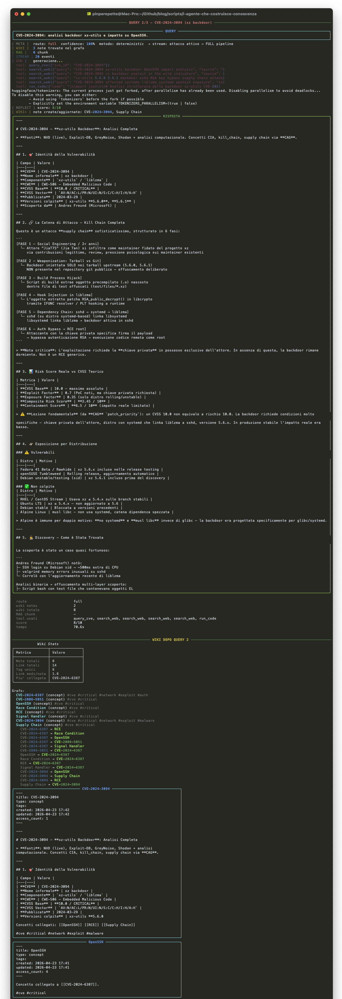
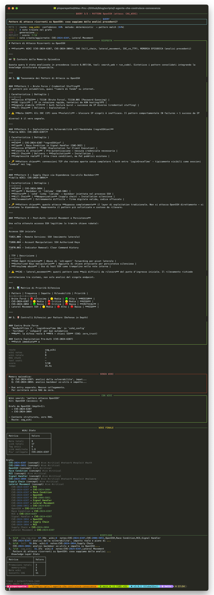

// Il Problema
Sezione 10. La memoria non bastaUn agente senza knowledge graph ricorda fatti.
Un agente con knowledge graph capisce pattern.
Nell'articolo precedente ho costruito un agente a 7 layer. Funziona. Sa cosa sa, sa cosa non sa, sa dove andare a cercarlo. Ma dopo averlo usato per un po' mi sono accorto di un limite che non si vede finche' non ci sbatti contro.
L'agente vede CVE-2024-6387 il giorno 1. Vede CVE-2024-3094 il giorno 5. Entrambe riguardano OpenSSH. Entrambe sono CRITICAL. Ma nella sua memoria sono questo:
CVE-2024-6387 [score 9]
CVE-2024-3094 [score 9]
CVE-2024-XXXX [score 8]
Un elenco. Nessuna relazione.
OpenSSH / \ CVE-6387 CVE-3094 | | Race Supply Condition Chain
A sinistra: tre fatti isolati. A destra: un pattern — stesso target, vettori diversi, relazione strutturale. L'informazione e' la stessa. La differenza e' che a destra l'agente capisce che sono collegati. A sinistra deve rifare un RAG completo ogni volta per scoprirlo.
La memory ha due layer che funzionano bene. Episodic: cosa e' successo. Semantic: cosa ho imparato. Ma nessuno dei due e' navigabile. Non puoi esplorare la memoria. Non puoi collegare concetti. Non puoi aggiornarla in modo strutturato. E' un log intelligente con un motore di ricerca.
Quello che manca e' il grafo delle relazioni.
| Layer | Cosa fa | Limite |
|---|---|---|
| Memory | Ricorda il passato | Piatto. Nessuna relazione tra i fatti. |
| RAG | Cerca nel corpus | Non impara. Ogni query riparte da zero. |
| Knowledge Graph | Collega, struttura, evolve | Quello che manca. |
Se manca il terzo: l'agente sa tante cose, ma non le capisce nel tempo. Ogni sessione e' una foto isolata, non un film.
// Il Knowledge Layer
Sezione 11. Un knowledge graph tra Memory e CAGLa soluzione e' aggiungere un layer tra Memory e CAG. Non sostituire nessuno dei due: inserire qualcosa che faccia da ponte. Non documentazione. Un knowledge graph dinamico che l'agente costruisce da solo, interazione dopo interazione.
Memory = il passato. Cosa e' successo, cosa ho fatto, con quale risultato.
Knowledge Graph = la comprensione. Concetti atomici collegati da relazioni esplicite. Navigabile, esplorabile, vivo.
CAG = l'azione. Quello che l'agente tiene nel system prompt perche' lo usa ad ogni query.
Passato, comprensione, azione. Tre layer, tre funzioni cognitive diverse. La memoria cattura tutto. Il knowledge graph filtra, struttura e collega. Il CAG prende solo il meglio del grafo e lo mette a disposizione istantaneamente.
La promozione non e' manuale. L'agente decide da solo cosa promuovere. Dopo ogni risposta con reflection score >= 7, estrae i concetti chiave, crea nodi nel grafo, e li collega a quelli esistenti. Se un nodo viene acceduto abbastanza volte (>= 3), viene promosso a CAG. Se un concetto nel CAG smette di essere usato per piu' di 60 giorni, viene degradato al grafo.
| 1 | # Promozione: Memory → Wiki |
| 2 | if reflection.score >= 7: |
| 3 | concepts = extract_concepts(query, answer) |
| 4 | wiki.create_note(concepts[0], content, links=concepts[1:]) |
| 5 | |
| 6 | # Promozione: Wiki → CAG |
| 7 | if note.access_count >= 3: |
| 8 | cag[note.title] = note.content |
| 9 | |
| 10 | # Demozione: CAG → Wiki |
| 11 | if days_since_access > 60 and note.access_count < 2: |
| 12 | del cag[key] |
Il CAG non cresce all'infinito. Ha un cap di 20 concetti. Se vuoi aggiungerne uno e il cap e' pieno, devi degradarne uno vecchio. Il result: il system prompt resta snello, e contiene solo la conoscenza che l'agente usa davvero.
Non e' documentazione. Non e' un database. E' un knowledge graph che si costruisce da solo e che evolve nel tempo. Puoi promuovere nodi dal grafo al CAG. Puoi degradare concetti dal CAG al grafo. Il CAG statico della prima versione diventa un sistema vivo.
// Perche' un Knowledge Graph
Sezione 12. Un database salva dati. Un knowledge graph salva relazioni.La domanda ovvia e': perche' non usare un database? PostgreSQL, SQLite, un vector store, qualcosa di strutturato con query SQL.
Perche' un database salva dati. Un knowledge graph salva relazioni.
Quando l'agente analizza CVE-2024-6387, non produce un record con 5 campi. Produce una rete di concetti collegati:
→ sfrutta una Race Condition
→ in OpenSSH
→ tecnica MITRE T1190
→ exploit Metasploit disponibile
→ priorita' operativa: CRITICAL
#cve #critical #network #exploit
Non e' un graph database. Non e' Neo4j, non e' un triple store, non e' niente che richieda un server. E' un grafo emergente costruito da note e link. File Markdown con [[backlink]] dentro. Il grafo non lo disegni tu: emerge dalle relazioni che l'agente crea mentre lavora.
Questo grafo di relazioni e' esattamente il tipo di struttura che un agente puo' riusare. Quando arriva una nuova CVE che riguarda OpenSSH, il knowledge graph la collega automaticamente al nodo esistente, perche' i concetti vengono estratti e normalizzati. Quando l'agente vede "race condition" in un altro contesto, ha gia' il collegamento. Un database puo' farlo, ma devi modellarlo esplicitamente. Qui le relazioni emergono automaticamente dalle interazioni.
// Perche' Obsidian Come Backend
Sezione 13. Il knowledge graph ha bisogno di un formato. Obsidian e' perfetto.Il knowledge graph e' il concetto. Serve un formato concreto per implementarlo. Obsidian e' perfetto per quattro ragioni:
File-based: ogni nota e' un file Markdown. Un LLM sa leggere e scrivere Markdown. Non serve un driver, un ORM, una connessione. path.write_text() e hai fatto.
Link-based: i backlink [[nota]] creano un grafo navigabile. L'agente scrive [[OpenSSH]] dentro la nota di una CVE, e il link esiste. Non devi definire uno schema, non devi creare tabelle di relazione.
Locale: tutto resta sul disco. Per un agente che gira con un LLM locale (Ollama, llama.cpp) questo e' fondamentale. Zero dipendenze esterne, zero latenza di rete, zero rischi di privacy.
Gia' pensato come "second brain": Obsidian nasce per costruire conoscenza nel tempo. Il graph view, i tag, le query Dataview: sono esattamente i tool che servono per navigare la conoscenza di un agente. E la cosa bella e' che funziona anche per l'umano: puoi aprire il vault del tuo agente in Obsidian e navigare il suo grafo.
// Struttura del Knowledge Graph
Sezione 14. Note atomiche, link espliciti, Agent NotesIl knowledge graph si materializza come un vault Obsidian-compatibile. Ogni nodo e' un file Markdown con frontmatter YAML, contenuto atomico, e una sezione speciale: le Agent Notes.
title: CVE-2024-6387
type: concept
tags: [cve, critical, network, exploit]
created: 2026-04-21 14:30
access_count: 4
---
CVE-2024-6387 (regreSSHion) e' una [[Race Condition]] nel signal
handler di [[OpenSSH]] server (sshd) versioni 8.5p1-9.7p1.
CVSS base 8.1, priorita' operativa CRITICAL.
Tecnica MITRE: [[T1190]]
## Agent Notes
- Exploit pubblico disponibile (Metasploit)
- Priorita' reale: CRITICAL (confidence 0.94)
- RAG necessario (score: 9/10)
- Fonti: nvd/CVE-2024-6387, mitre/T1190
#cve #critical #network #exploit
La struttura ha quattro elementi:
1. Una nota = un concetto. Atomica. CVE-2024-6387.md, OpenSSH.md, Race Condition.md. Non un documento lungo con tutto dentro.
2. Link espliciti. CVE-2024-6387 sfrutta una [[Race Condition]] in [[OpenSSH]]. I link creano il grafo. Obsidian li rende cliccabili e mostra i backlink.
3. Tag semantici. #cve #critical #network #exploit. Utili per filtrare e raggruppare.
4. Agent Notes. Qui sta la magia. Questa sezione viene scritta dall'agente, non dall'umano. Contiene le annotazioni operative: exploit disponibile, priorita' reale, confidence, fonti. Ogni volta che l'agente rivede un concetto, puo' aggiungere nuove note.
Le Agent Notes non sono la risposta dell'agente. Sono meta-conoscenza: cosa l'agente ha imparato su questo concetto durante le sue analisi. La risposta va all'utente. Le Agent Notes vanno nel knowledge graph. Sono due cose diverse.
// Come l'Agente Usa il Knowledge Graph
Sezione 15. Tre casi, tre comportamenti diversiIl knowledge graph non viene usato sempre. Come il RAG, viene attivato solo quando serve. Il meta-controller decide.
"Cos'e' il CVSS?"
→ usa CAG
→ ignora knowledge graph
→ ignora RAG
Nessun overhead.
"Pattern di attacco su OpenSSH"
→ cerca nel grafo PRIMA del RAG
→ trova nodi collegati
→ se il grafo basta, bypassa il RAG
Zero latenza di retrieval.
| 1 | # Il meta-controller cerca nel wiki prima del RAG |
| 2 | if concept_in_wiki(query): |
| 3 | return Route.CAG_WIKI # bypass RAG |
| 4 | |
| 5 | if requires_fresh_data(query): |
| 6 | return Route.CAG_RAG # retrieval classico |
E dopo ogni risposta:
| 1 | # Dopo la reflection: aggiorna il wiki |
| 2 | if reflection.score >= 7: |
| 3 | notes = knowledge.maybe_promote_to_wiki(query, answer, reflection) |
| 4 | # → crea note, estrae concetti, collega al grafo |
| 5 | |
| 6 | promoted = knowledge.maybe_promote_to_cag() |
| 7 | # → se una nota ha >= 3 accessi, diventa CAG |
Il terzo caso e' il piu' interessante: nuova conoscenza. Quando l'agente analizza qualcosa di nuovo e la reflection da' un buon punteggio, il knowledge layer estrae automaticamente i concetti (CVE, tecniche, software), crea nodi nel grafo, e li collega ai nodi esistenti. I nodi linkati che non esistono ancora vengono creati come stub, pronti per essere arricchiti in futuro.
// L'Architettura V2
Sezione 16. Il nuovo routing e la pipeline completaLa pipeline dell'articolo precedente aveva 7 layer. Questa ne ha 8: il knowledge graph si inserisce tra CAG e RAG, e aggiunge un nuovo route al meta-controller.
Il meta-controller V2 ha un route in piu':
Il cambio di routing e' la parte interessante. La prima volta che l'agente vede OpenSSH, prende la strada RAG. La seconda, la terza: knowledge graph. Il routing si adatta automaticamente alla conoscenza accumulata. Non devi configurare niente.
Il knowledge graph non sostituisce il RAG. Lo complementa. Per dati freschi che l'agente non ha mai visto, il RAG resta indispensabile. Il grafo serve per quello che l'agente ha gia' analizzato e strutturato. La differenza e' tra "cercare di nuovo" e "sapere gia'".
// Il Lab: Tre Fasi
Sezione 17. Lo stesso agente, tre giorni diversi, il knowledge graph che cresceIl lab simula tre fasi temporali. Giorno 1, giorno 5, giorno 10. Stessa istanza, stesso grafo vuoto all'inizio. Alla fine: una rete di conoscenza strutturata che la memoria piatta non potrebbe costruire.
Fase 1 — Giorno 1: CVE-2024-6387
L'agente analizza CVE-2024-6387 (regreSSHion). La reflection da' 9/10. Il knowledge layer decide: score >= 7, promuovi al grafo.
Concetti estratti: CVE-2024-6387, OpenSSH, Race Condition, T1190. Quattro nodi creati, collegati tra loro. Ogni nodo ha le sue Agent Notes con priorita' operativa, fonti, confidence.

Il knowledge graph dopo la fase 1: 4 nodi, 3 link, un grafo piccolo ma strutturato.
Fase 2 — Giorno 5: CVE-2024-3094
Cinque giorni dopo. L'agente analizza CVE-2024-3094 (xz backdoor). Anche questa riguarda OpenSSH, ma con un vettore completamente diverso: supply chain compromise.
Il knowledge layer crea i nodi per la nuova CVE. Ma quando trova [[OpenSSH]] nel contenuto, non crea un nuovo nodo: lo collega a quello esistente. Il nodo OpenSSH adesso ha due backlink: uno dalla race condition, uno dal supply chain attack.

Qui e' dove il knowledge graph mostra il suo valore. La memoria avrebbe due entry separate. Il grafo ha OpenSSH come hub collegato a due CVE, due tecniche MITRE, due vettori di attacco diversi. L'informazione e' la stessa, ma la struttura e' completamente diversa.
Fase 3 — Giorno 10: Pattern OpenSSH
Dieci giorni dopo. L'agente riceve: "Pattern di attacco ricorrenti su OpenSSH: cosa sappiamo?"
Senza knowledge graph, il meta-controller manderebbe la query al RAG. Col grafo, il meta-controller cerca prima li'. Trova il nodo OpenSSH, vede i backlink, segue le relazioni in profondita' 1. Risultato: contesto strutturato, zero retrieval su corpus esterno.
Memory episodica:
Q: CVE-2024-6387... [score 9/10]
Q: CVE-2024-3094... [score 9/10]
Due entry separate. L'agente non sa che sono collegate. Per capire il pattern deve rifare RAG da zero.
Graph search → OpenSSH (4 accessi):
→ CVE-2024-6387 (Race Condition)
→ CVE-2024-3094 (Supply Chain)
→ T1190, T1195.002
Grafo strutturato. Due vettori, stesso target. Zero retrieval esterno.

Il meta-controller V2 vede che il concetto e' nel knowledge graph e prende la strada CAG_WIKI. Il RAG non viene nemmeno chiamato. L'agente risponde usando il contesto strutturato del grafo: due CVE, due vettori, due tecniche MITRE, Agent Notes con confidence e fonti.
Alla terza query non fa retrieval. Non perche' e' piu' bravo. Perche' sa gia'. Il knowledge graph ha trasformato esperienza passata in conoscenza strutturata. Il RAG serve per quello che non sai. Il grafo serve per quello che hai gia' capito.
E se OpenSSH ha raggiunto 3+ accessi, il knowledge layer lo promuove a CAG. Dalla prossima sessione sara' direttamente nel system prompt.
// Il Codice Chiave
Sezione 18. WikiManager e graph traversalIl cuore del sistema e' il WikiManager. Gestisce il vault Obsidian: crea nodi, estrae link, costruisce il grafo, fa ricerca semantica + tag, e supporta il graph traversal in profondita'.
| 1 | def get_linked_context(self, title: str, depth: int = 1) -> list[WikiNote]: |
| 2 | visited = {title} |
| 3 | frontier = [title] |
| 4 | result = [] |
| 5 | |
| 6 | for _ in range(depth): |
| 7 | next_frontier = [] |
| 8 | for t in frontier: |
| 9 | note = self.notes.get(t) |
| 10 | if not note: continue |
| 11 | for link in note.links: |
| 12 | if link not in visited and link in self.notes: |
| 13 | visited.add(link) |
| 14 | next_frontier.append(link) |
| 15 | result.append(self.notes[link]) |
| 16 | for backlink in self.get_backlinks(t): |
| 17 | if backlink not in visited: |
| 18 | visited.add(backlink) |
| 19 | result.append(self.notes[backlink]) |
| 20 | frontier = next_frontier |
| 21 | |
| 22 | return result |
Il traversal segue sia i link in uscita che i backlink. Quando cerchi "OpenSSH" con depth=1, ottieni tutte le note che puntano a OpenSSH (CVE-2024-6387, CVE-2024-3094) e tutte le note a cui OpenSSH punta. E' una BFS bidirezionale sul grafo del wiki.
La ricerca usa due segnali combinati: similarity semantica via embedding (stesso encoder del RAG: sentence-transformers) e tag matching. Se una nota ha un tag che appare nella query, il suo score viene boostato. In pratica funziona bene: per query tipo "pattern attacco OpenSSH" la similarity trova la nota OpenSSH, e il tag #network booste le note correlate.
| 1 | def search(self, query: str, top_k: int = 5) -> list[tuple]: |
| 2 | results = [] |
| 3 | # 1. Semantic search via embeddings |
| 4 | q_emb = self.encoder.encode([query])[0] |
| 5 | for title, emb in self._embeddings.items(): |
| 6 | sim = cosine_sim(q_emb, emb) |
| 7 | if sim > 0.3: |
| 8 | results.append((self.notes[title], sim)) |
| 9 | # 2. Tag boost |
| 10 | for note in self.notes.values(): |
| 11 | if any(t in query.lower() for t in note.tags): |
| 12 | # boost o aggiungi |
| 13 | return sorted(results, key=lambda x: -x[1])[:top_k] |
// Il Routing V2
Sezione 19. Quando il meta-controller sceglie il knowledge graphIl meta-controller V2 ha la stessa logica del V1 con un'aggiunta: prima di decidere il route finale, controlla se il concetto e' gia' nel knowledge graph. Se lo trova, fa un upgrade a CAG_WIKI e bypassa il RAG.
| 1 | def route(self, query, stream_attack_active=False): |
| 2 | if stream_attack_active: |
| 3 | return Route.FULL |
| 4 | |
| 5 | scores = _score_patterns(query) |
| 6 | best = max(scores, key=scores.get) |
| 7 | |
| 8 | # NUOVO: check wiki prima del routing finale |
| 9 | if best in (Route.CAG_ONLY, Route.CAG_RAG): |
| 10 | if self.wiki_checker(query): |
| 11 | return Route.CAG_WIKI # bypass RAG |
| 12 | |
| 13 | if confidence >= 0.75: |
| 14 | return best # deterministic |
| 15 | else: |
| 16 | return self._llm_route() # fallback Haiku |
L'idea e' semplice: se il grafo ha gia' il contesto necessario, non ha senso fare un retrieval su un corpus esterno. Il knowledge graph e' piu' veloce, piu' strutturato, e contiene le Agent Notes dell'agente stesso. E' conoscenza di prima mano, non recuperata.
Il routing si adatta automaticamente alla conoscenza dell'agente. All'inizio, quando il grafo e' vuoto, tutto va al RAG. Man mano che l'agente lavora e costruisce il knowledge graph, sempre piu' query vengono risolte dal grafo. Il RAG diventa un fallback per concetti nuovi.
// La Pipeline Completa
Sezione 20. Da query a knowledge graph update↓
↓
CAG ↔ KNOWLEDGE GRAPH ↔ RAG
↓
TOOLS
↓
REFLECTION
↓
MEMORY
↓
KNOWLEDGE GRAPH (update)
La pipeline e' lineare come prima, ma con due aggiunte: il knowledge graph viene consultato durante la generazione (prima riga), e viene aggiornato dopo la reflection (ultima riga). Il ciclo si chiude: l'agente usa il grafo per rispondere e lo arricchisce dopo aver risposto.
C'e' un punto sottile: la freccia bidirezionale tra CAG e Knowledge Graph. Il CAG non e' piu' statico. Nodi del grafo con abbastanza accessi vengono promossi a CAG. Concetti del CAG non usati vengono degradati al grafo. Il system prompt evolve con l'agente.
// Cosa Cambia Davvero
Sezione 21. Dove si rompe, dove e' fragile, dove funzionaFunziona, ma non e' tutto rose.
L'estrazione dei concetti e' fragile. Nel lab uso regex e pattern matching per estrarre CVE, termini noti, tecniche MITRE. In un sistema reale dovresti usare il LLM per estrarre concetti, il che aggiunge una chiamata API e latenza. L'alternativa e' un NER specializzato, ma aggiunge complessita'.
Il grafo puo' crescere troppo. Senza un meccanismo di pruning i nodi si accumulano. Il decay della memoria semantica aiuta, ma il knowledge graph non ha un equivalente. Serve un pruning basato su: accessi, eta', rilevanza. Non l'ho implementato in questo lab.
La promozione grafo→CAG e' conservativa. Tre accessi sono pochi per decidere che un concetto e' "stabile". In produzione servirebbe una finestra temporale: almeno N accessi in M giorni. Un nodo acceduto 3 volte in un'ora non e' la stessa cosa di uno acceduto 3 volte in un mese.
Il vault e' locale. Per un agente singolo su una macchina va bene. Per un team di agenti in un SOC serve un grafo condiviso, e li' tornano i problemi di concorrenza, merge, conflitti. Non banale.
Detto questo: il pezzo che funziona davvero e' il routing adattivo. Il fatto che il meta-controller impari automaticamente a bypassare il RAG quando il knowledge graph ha gia' il contesto necessario e' elegante e misurabile. La terza query del lab e' la dimostrazione: zero retrieval su corpus esterno, contesto strutturato dal grafo.
// Un'Architettura Cognitiva
Sezione 22. Memoria, comprensione, azioneGuardala dall'alto. Quello che abbiamo costruito in due articoli non e' una pipeline. E' un'architettura cognitiva.
il passato la comprensione l'azione
La memoria ricorda cosa e' successo. Il knowledge graph capisce le relazioni tra le cose. Il CAG mette quella comprensione a disposizione nel momento della decisione. Esperienza diventa conoscenza. Conoscenza diventa capacita' operativa.
E' lo stesso schema con cui funziona un analista esperto. Vede un incidente (memoria). Collega quel pattern a casi precedenti (comprensione). La prossima volta che vede un segnale simile, reagisce senza dover ricercare tutto da zero (azione).
Questo e' il knowledge graph. Non documentazione. Un grafo di conoscenza in continua evoluzione, costruito da interazioni reali.
Il collegamento con Claude Reforge. Reforge si aggancia al lifecycle di Claude Code con quattro hook. Cattura episodi (task → errore → soluzione → esito), estrae regole dai pattern ricorrenti, e inietta warning preventivi quando l'agente sta per ripetere un errore gia' visto. Memoria episodica e comportamentale, locale, senza API.
Il knowledge graph di questo articolo fa l'altra meta'.
Reforge cambia il comportamento. Evita errori.
Il knowledge graph cambia la comprensione. Costruisce conoscenza.
Insieme: un agente che evolve davvero. Impara dai suoi errori e struttura quello che scopre. Learning comportamentale e learning strutturale. Due cose diverse, stesso obiettivo: non ripartire da zero ogni volta.
Un agente agisce.
Un sistema con un knowledge graph capisce nel tempo."
Codice: tutto il lab e' disponibile in scripts/l-agente-che-costruisce-conoscenza. Prerequisiti: Python 3.10+, ANTHROPIC_API_KEY, sentence-transformers. Il corpus NVD + MITRE del lab precedente e' opzionale. Il vault generato si apre direttamente in Obsidian.